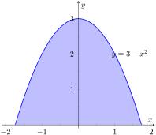
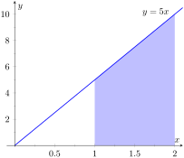
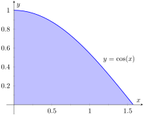
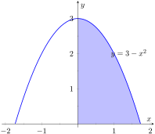
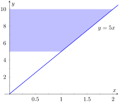
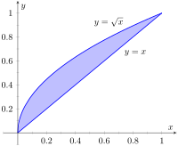

Given an arbitrary solid, we can approximate its volume by cutting it into \(n\) thin slices. When the slices are thin, each slice can be approximated well by a general right cylinder. Thus the volume of each slice is approximately its cross-sectional area × thickness. (These slices are the differential elements.)
By orienting a solid along the \(x\)-axis, we can let \(A(x_i)\) represent the cross-sectional area of the \(i\)th slice, and let \(\dx_i\) represent the thickness of this slice (the thickness is a small change in \(x\)). The total volume of the solid is approximately:
There are many ways to “orient” the pyramid along the \(x\)-axis; Figure 7.2.5 gives one such way, with the pointed top of the pyramid at the origin and the \(x\)-axis going through the center of the base.
Figure7.2.5.Orienting a pyramid along the \(x\)-axis in Example 7.2.4
Each cross section of the pyramid is a square; this is a sample differential element. To determine its area \(A(x)\text{,}\) we need to determine the side lengths of the square.
When \(x=5\text{,}\) the square has side length 10; when \(x=0\text{,}\) the square has side length 0. Since the edges of the pyramid are lines, it is easy to figure that each cross-sectional square has side length \(2x\text{,}\) giving \(A(x) = (2x)^2=4x^2\text{.}\)
If one were to cut a slice out of the pyramid at \(x=3\text{,}\) as shown in Figure 7.2.6, one would have a shape with square bottom and top with sloped sides. If the slice were thin, both the bottom and top squares would have sides lengths of about 6, and thus the cross-sectional area of the bottom and top would be about 36 in2. Letting \(\Delta x_i\) represent the thickness of the slice, the volume of this slice would then be about \(36\Delta x_i\) in3.
Figure7.2.6.Cutting a slice in the pyramid in Example 7.2.4 at \(x=3\)
Cutting the pyramid into \(n\) slices divides the total volume into \(n\) equally-spaced smaller pieces, each with volume \((2x_i)^2\Delta x\text{,}\) where \(x_i\) is the approximate location of the slice along the \(x\)-axis and \(\Delta x\) represents the thickness of each slice. One can approximate total volume of the pyramid by summing up the volumes of these slices:
Taking the limit as \(n\to\infty\) gives the actual volume of the pyramid; recoginizing this sum as a Riemann Sum allows us to find the exact answer using a definite integral, matching the definite integral given by Theorem 7.2.3.
We can check our work by consulting the general equation for the volume of a pyramid (see the back cover under “Volume of A General Cone”):
\(\frac13\times \,\text{area of base}\, \times \,\text{height}\text{.}\)
Certainly, using this formula from geometry is faster than our new method, but the calculus-based method can be applied to much more than just cones.
An important special case of Theorem 7.2.3 is when the solid is a solid of revolution, that is, when the solid is formed by rotating a shape around an axis.
Start with a function \(y=f(x)\) from \(x=a\) to \(x=b\text{.}\) Revolving this curve about a horizontal axis creates a three-dimensional solid whose cross sections are disks (thin circles). Let \(R(x)\) represent the radius of the cross-sectional disk at \(x\text{;}\) the area of this disk is \(\pi R(x)^2\text{.}\) Applying Theorem 7.2.3 gives the Disk Method.
Key Idea7.2.7.The Disk Method.
Let a solid be formed by revolving the curve \(y=f(x)\) from \(x=a\) to \(x=b\) around a horizontal axis, and let \(R(x)\) be the radius of the cross-sectional disk at \(x\text{.}\) The volume of the solid is
\begin{equation*}
V = \pi \int_a^b R(x)^2\, dx\text{.}
\end{equation*}
Example7.2.8.Finding volume using the Disk Method.
Find the volume of the solid formed by revolving the curve \(y=1/x\text{,}\) from \(x=1\) to \(x=2\text{,}\) around the \(x\)-axis.
A sketch can help us understand this problem. In Figure 7.2.9.(a), the curve \(y=1/x\) is sketched along with the differential element — a disk — at \(x\) with radius \(R(x)=1/x\text{.}\) In Figure 7.2.9.(b) the whole solid is pictured, along with the differential element.
The volume of the differential element shown in Figure 7.2.9.(a) is approximately \(\pi R(x_i)^2\Delta x\text{,}\) where \(R(x_i)\) is the radius of the disk shown and \(\Delta x\) is the thickness of that slice. The radius \(R(x_i)\) is the distance from the \(x\)-axis to the curve, hence \(R(x_i) = 1/x_i\text{.}\)
Taking the limit of the above sum as \(n\to\infty\) gives the actual volume; recognizing this sum as a Riemann sum allows us to evaluate the limit with a definite integral, which matches the formula given in Key Idea 7.2.7:
While Key Idea 7.2.7 is given in terms of functions of \(x\text{,}\) the principle involved can be applied to functions of \(y\) when the axis of rotation is vertical, not horizontal. We demonstrate this in the next example.
Example7.2.10.Finding volume using the Disk Method.
Find the volume of the solid formed by revolving the curve \(y=1/x\text{,}\) from \(x=1\) to \(x=2\text{,}\) about the \(y\)-axis.
Since the axis of rotation is vertical, we need to convert the function into a function of \(y\) and convert the \(x\)-bounds to \(y\)-bounds. Since \(y=1/x\) defines the curve, we rewrite it as \(x=1/y\text{.}\) The bound \(x=1\) corresponds to the \(y\)-bound \(y=1\text{,}\) and the bound \(x=2\) corresponds to the \(y\)-bound \(y=1/2\text{.}\)
Thus we are rotating the curve \(x=1/y\text{,}\) from \(y=1/2\) to \(y=1\) about the \(y\)-axis to form a solid. The curve and sample differential element are sketched in Figure 7.2.11.(a), with a full sketch of the solid in Figure 7.2.11.(b).
We can also compute the volume of solids of revolution that have a hole in the center. The general principle is simple: compute the volume of the solid irrespective of the hole, then subtract the volume of the hole. If the outside radius of the solid is \(R(x)\) and the inside radius (defining the hole) is \(r(x)\text{,}\) then the volume is
Figure7.2.12.Establishing the Washer Method; see also Figure 7.2.13
One can generate a solid of revolution with a hole in the middle by revolving a region about an axis. Consider Figure 7.2.12.(a), where a region is sketched along with a dashed, horizontal axis of rotation. By rotating the region about the axis, a solid is formed as sketched in Figure 7.2.12.(b). The outside of the solid has radius \(R(x)\text{,}\) whereas the inside has radius \(r(x)\text{.}\) Each cross section of this solid will be a washer (a disk with a hole in the center) as sketched in Figure 7.2.13. This leads us to the Washer Method.
Figure7.2.13.Establishing the Washer Method; see also Figure 7.2.12
Key Idea7.2.14.The Washer Method.
Let a region bounded by \(y=f(x)\text{,}\)\(y=g(x)\text{,}\)\(x=a\) and \(x=b\) be rotated about a horizontal axis that does not intersect the region, forming a solid. Each cross section at \(x\) will be a washer with outside radius \(R(x)\) and inside radius \(r(x)\text{.}\) The volume of the solid is
\begin{equation*}
V = \pi\int_a^b \Big(R(x)^2-r(x)^2\Big)\, dx\text{.}
\end{equation*}
Even though we introduced it first, the Disk Method is just a special case of the Washer Method with an inside radius of \(r(x)=0\text{.}\)
Example7.2.15.Finding volume with the Washer Method.
Find the volume of the solid formed by rotating the region bounded by \(y=x^2-2x+2\) and \(y=2x-1\) about the \(x\)-axis.
A sketch of the region will help, as given in Figure 7.2.16.(a). Rotating about the \(x\)-axis will produce cross sections in the shape of washers, as shown in Figure 7.2.16.(b); the complete solid is shown in Figure 7.2.16.(c). The outside radius of this washer is \(R(x) = 2x+1\text{;}\) the inside radius is \(r(x) = x^2-2x+2\text{.}\) As the region is bounded from \(x=1\) to \(x=3\text{,}\) we integrate as follows to compute the volume.
The triangular region is sketched in Figure 7.2.18.(a); the differential element is sketched in Figure 7.2.18.(b) and the full solid is drawn in Figure 7.2.18.(c). They help us establish the outside and inside radii. Since the axis of rotation is vertical, each radius is a function of \(y\text{.}\)
The outside radius \(R(y)\) is formed by the line connecting \((2,1)\) and \((2,3)\text{;}\) it is a constant function, as regardless of the \(y\)-value the distance from the line to the axis of rotation is 2. Thus \(R(y)=2\text{.}\)
The inside radius is formed by the line connecting \((1,1)\) and \((2,3)\text{.}\) The equation of this line is \(y=2x-1\text{,}\) but we need to refer to it as a function of \(y\text{.}\) Solving for \(x\) gives \(r(y) = \frac12(y+1)\text{.}\)
We integrate over the \(y\)-bounds of \(y=1\) to \(y=3\text{.}\) Thus the volume is
This section introduced a new application of the definite integral. Our default view of the definite integral is that it gives “the area under the curve.” However, we can establish definite integrals that represent other quantities; in this section, we computed volume.
The ultimate goal of this section is not to compute volumes of solids. That can be useful, but what is more useful is the understanding of this basic principle of integral calculus, outlined in Key Idea 7.0.1: to find the exact value of some quantity,
we start with an approximation (in this section, slice the solid and approximate the volume of each slice),
then make the approximation better by refining our original approximation (i.e., use more slices),
then use limits to establish a definite integral which gives the exact value.
We practice this principle in the next section where we find volumes by slicing solids in a different way.
ExercisesExercises
Terms and Concepts
1.
T/F: A solid of revolution is formed by revolving a shape around an axis.
2.
In your own words, explain how the Disk and Washer Methods are related.
3.
Explain the how the units of volume are found in the integral of Theorem 7.2.3: if \(A(x)\) has units of \(\text{in}^2\text{,}\) how does \(\int A(x)\,dx\) have units of \(\text{in}^3\text{?}\)
Problems
Exercise Group.
Use the Disk/Washer Method to find the volume of the solid of revolution formed by revolving the given region about the \(x\)-axis.
4.
The region between \(y=3-x^2\) and the \(x\) axis:

5.
The region between \(y=5x\) and the \(x\) axis, for \(1\leq x\leq 2\text{:}\)

6.
The region between \(y=\cos(x)\) and the \(x\) axis, for \(0\leq x\leq \pi/2\text{:}\)

7.
The region between the curves \(y=x\) and \(y=\sqrt{x}\text{:}\)
Exercise Group.
Use the Disk/Washer Method to find the volume of the solid of revolution formed by revolving the given region about the \(y\)-axis.
8.
The region bounded by the curve \(y=3-x^2\text{,}\) the \(x\) axis, and the \(y\) axis:

9.
The region between \(y=5x\) and the \(y\) axis, for \(5\leq y\leq 10\text{:}\)

10.
The region between \(y=\cos(x)\) and the \(x\) axis, for \(0\leq x\leq \pi/2\text{:}\)
(Hint: Integration By Parts will be necessary, twice. First let \(u = \arccos^2x\text{,}\) then let \(u=\arccos x\text{.}\))
11.
The region between the curves \(y=x\) and \(y=\sqrt{x}\text{:}\)

Exercise Group.
Use the Disk/Washer Method to find the volume of the solid of revolution formed by rotating the given region about each of the given axes.
12.
Region bounded by: \(y=\sqrt{x}\text{,}\)\(y=0\) and \(x=1\text{.}\)
Rotate about:
the \(x\)-axis
\(\displaystyle y=1\)
the \(y\)-axis
\(\displaystyle x=1\)
13.
Region bounded by: \(y=4-x^2\) and \(y=0\text{.}\)
Rotate about:
the \(x\)-axis
\(\displaystyle y=4\)
\(\displaystyle y=-1\)
\(\displaystyle x=2\)
14.
The triangle with vertices \((1,1)\text{,}\)\((1,2)\) and \((2,1)\text{.}\)
Rotate about:
the \(x\)-axis
\(\displaystyle y=2\)
the \(y\)-axis
\(\displaystyle x=1\)
15.
Region bounded by \(y=x^2-2x+2\) and \(y=2x-1\text{.}\)
Rotate about:
the \(x\)-axis
\(\displaystyle y=1\)
\(\displaystyle y=5\)
16.
Region bounded by \(y=1/\sqrt{x^2+1}\text{,}\)\(x=-1\text{,}\)\(x=1\) and the \(x\)-axis.
Rotate about:
the \(x\)-axis
\(\displaystyle y=1\)
\(\displaystyle y=-1\)
17.
Region bounded by \(y=2x\text{,}\)\(y=x\) and \(x=2\text{.}\)
Rotate about:
the \(x\)-axis
\(\displaystyle y=4\)
the \(y\)-axis
\(\displaystyle x=2\)
Exercise Group.
Orient the given solid along the \(x\)-axis such that a cross-sectional area function \(A(x)\) can be obtained, then apply Theorem 7.2.3 to find the volume of the solid.
18.
A right circular cone with height of 10 and base radius of 5.
19.
A skew right circular cone with height of 10 and base radius of 5. (Hint: all cross-sections are circles.)
20.
A right triangular cone with height of 10 and whose base is a right, isosceles triangle with side length 4.
21.
A solid with length 10 with a rectangular base and triangular top, wherein one end is a square with side length 5 and the other end is a triangle with base and height of 5.